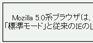
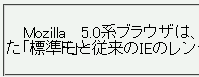

text-align: justify; を指定した要素内では、「ー」（長音記号）と後の文字とが重なって表示されることがある。
<p style="text-align: justify;">Mozilla 5.0系…（中略）…あります。</p>
Mozilla 5.0系ブラウザは、DOCTYPEの記述によってCSSのレンダリングが変わります。W3C勧告に準拠した「標準モード」と従来のIEのレンダリングを継承した「互換モード」の2種類のモードがあります。
p要素は両端揃えにしています。
WinIE6.0での表示（標準モード）
N6.1での表示（標準モード）
「ー」と直後の文字が重なる現象については、Mozバグ030も参照してください。
両端揃え時に文字が重なる現象についてはMozillaバグ035も参照してください。
N6.1では「ー」に続く文字が前の文字と重なって表示されます。Moz1.0では重ならず、正しく表示されます。